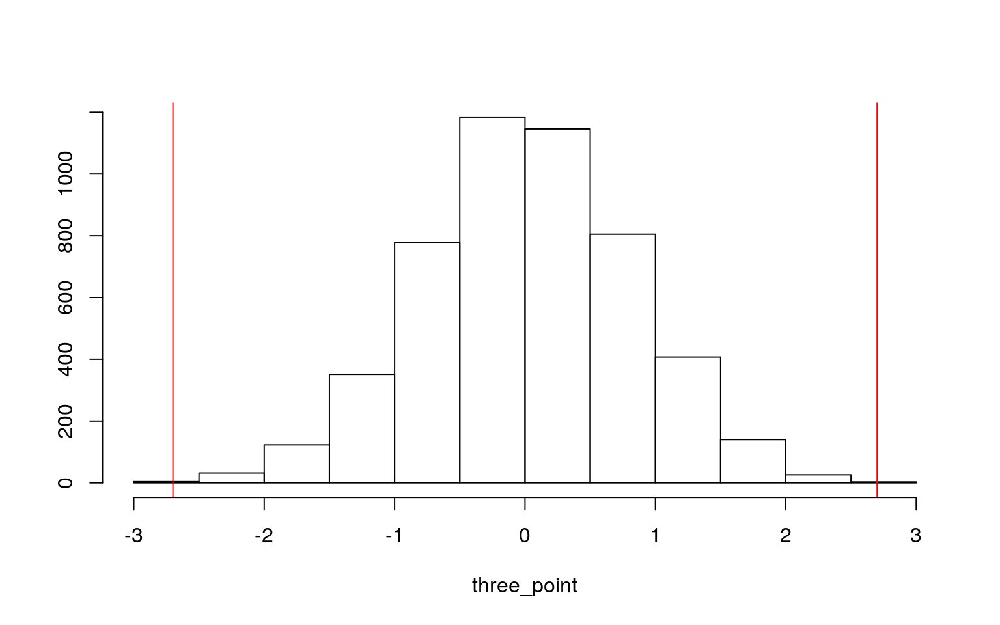
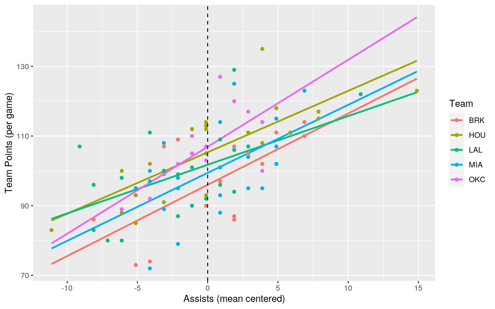
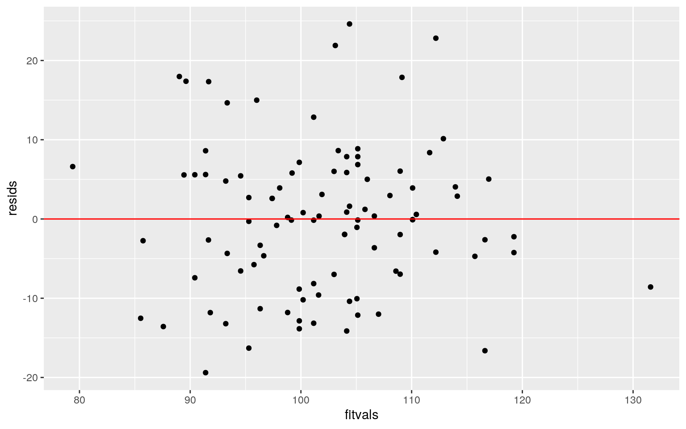
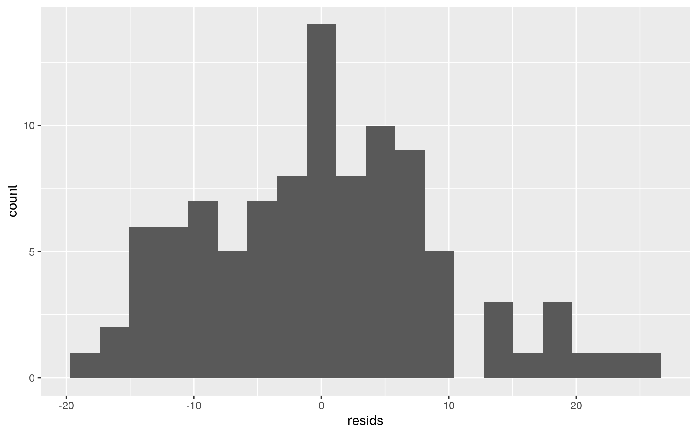
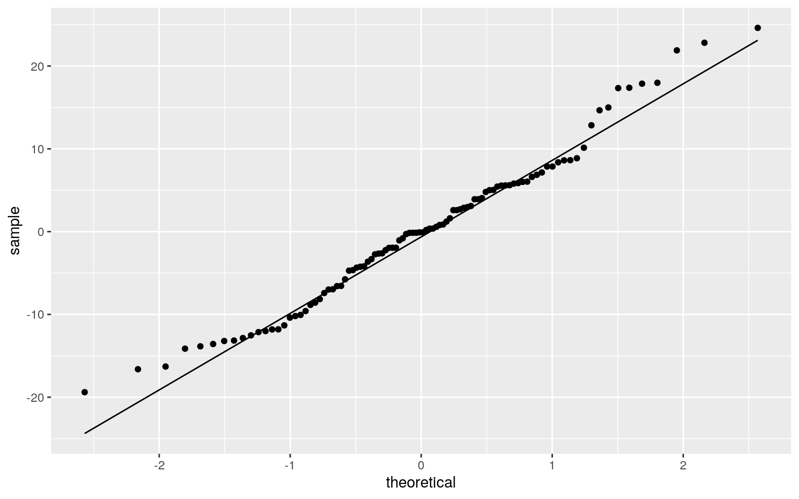
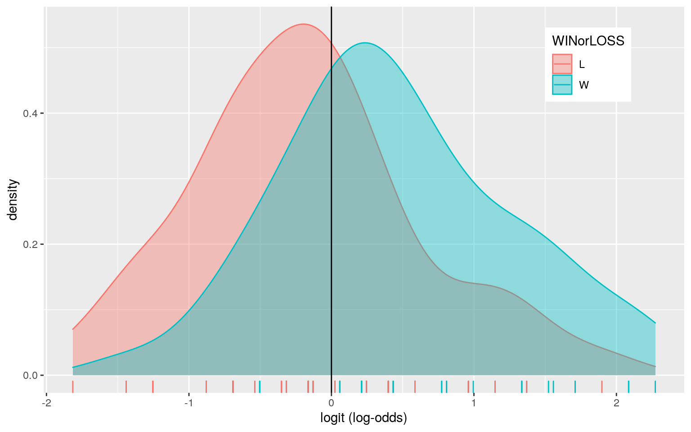
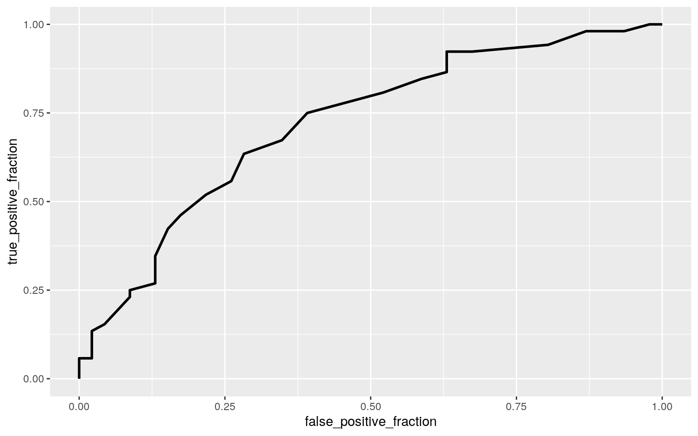

set.seed(200)
library(tidyverse)
library(rstatix)
nba_games_stats <- read_csv("nba.games.stats.csv")
nba <- nba_games_stats
target <- c("BRK", "HOU", "LAL", "MIA", "OKC")
nba <- filter(nba, Team %in% target)
nba <- nba %>% sample_frac(0.06)
nba <- nba %>% select(Team, Home, WINorLOSS, TeamPoints, X3PointShots, Assists)
names(nba)[names(nba) == "X3PointShots"] <- "ThreePointShots"While searching for datasets of interest to me, I came upon a dataset that tracked stats for every NBA game between 2014 and 2018. Stats included whether the game was home or away and points scored, three pointers made, assists, steals, blocks, and many other categories for both the winning and losing teams. Looking at this dataset, I became interested in seeing whether these different statistical categories had any relationship with whether a team won or lost. The initial dataset had 9,840 observations for 30 different teams and 41 total categories. For my project, I chose 5 teams from the dataset and then randomly selected 6% of the observations from these teams using the sample_frac function in R. This left me with a total of 98 observations for each of the 41 different variables in the dataset. I did this because I thought it would be more realistic for my project to analyze a smaller number of observations for a few teams. I then selected the following variables: Team, Home, WINorLOSS, TeamPoints, X3PointShots, Assists. The Team variable listed which of the 5 teams played in the game that was being analyzed. The Home variable listed whether that team was the Home team or the Away team. The WINorLOSS variable listed whether that team won or lost that game. The TeamPoints variable listed the amount of points scored by that team in that game. The ThreePointShots variable listed the amount of three pointers made by that team in that game. The Assists variable listed the amount of assists made by that team in that game. I decided to focus on these variables because I thought that they were most likely to impact whether a team won or lost a game. My final dataset had 6 variables with 98 rows each, for a total of 588 observations overall.
set.seed(200)
## MANOVA
man1 <- manova(cbind(TeamPoints, ThreePointShots, Assists) ~ Team, data = nba)
summary(man1)## Df Pillai approx F num Df den Df Pr(>F)
## Team 4 0.48493 4.4828 12 279 1.366e-06 ***
## Residuals 93
## ---
## Signif. codes: 0 '***' 0.001 '**' 0.01 '*' 0.05 '.' 0.1
' ' 1## Univariate ANOVAs
summary.aov(man1)## Response TeamPoints :
## Df Sum Sq Mean Sq F value Pr(>F)
## Team 4 969.6 242.39 1.5234 0.2018
## Residuals 93 14797.4 159.11
##
## Response ThreePointShots :
## Df Sum Sq Mean Sq F value Pr(>F)
## Team 4 523.12 130.78 11.441 1.354e-07 ***
## Residuals 93 1063.02 11.43
## ---
## Signif. codes: 0 '***' 0.001 '**' 0.01 '*' 0.05 '.' 0.1
' ' 1
##
## Response Assists :
## Df Sum Sq Mean Sq F value Pr(>F)
## Team 4 104.03 26.007 1.2559 0.293
## Residuals 93 1925.74 20.707## Post-hoc t tests
pairwise.t.test(nba$ThreePointShots, nba$Team, p.adj="none")##
## Pairwise comparisons using t tests with pooled SD
##
## data: nba$ThreePointShots and nba$Team
##
## BRK HOU LAL MIA
## HOU 0.00022 - - -
## LAL 0.02862 7.1e-09 - -
## MIA 0.28246 1.3e-06 0.23166 -
## OKC 0.68698 0.00165 0.01301 0.15094
##
## P value adjustment method: none## Boneferroni adjusted significance level
0.05/14## [1] 0.003571429## Type 1 Error Rate
1-(0.95^14)## [1] 0.512325## MANOVA Assumptions
group <- nba$Team
DVs <- nba %>% select(TeamPoints, ThreePointShots, Assists)
sapply(split(DVs,group), mshapiro_test)## BRK HOU LAL MIA OKC
## statistic 0.9578671 0.9222298 0.9408187 0.9581222
0.8594462
## p.value 0.5610326 0.09616237 0.2057715 0.4522817
0.02369336A one-way MANOVA was conducted to determine the effect of the Team on three dependent variables (TeamPoints, ThreePointShots, and Assists). Significant differences were found among the five teams for at least one of the dependent variables, Pillai = 0.48493, F = 4.4828, p < 0.001. Univariate ANOVAs for each dependent variable were conducted as follow-up tests to the MANOVA, using the Bonferroni method for controlling Type I error rates for multiple comparisons. The univariate ANOVAs was only significant for ThreePointShots, indicating that there was a difference in the mean number of three point shots made by the five teams per game (F= 11.441, p< 0.001). Post hoc analysis was performed conducting pairwise comparisons to determine which teams differed for average number of three point shots made per game. The following teams were found to significantly differ: Houston Rockets and Brooklyn Nets (p<0.001); Brooklyn Nets and Los Angeles Lakers (p<0.05); Houston Rockets and Los Angeles Lakers (p<0.001); Houston Rockets and Miami Heat (p<0.001); Houston Rockets and Oklahoma City Thunder (p<0.01); and Oklahoma City Thunder and Los Angeles Lakers (p<0.05). In total, I conducted 1 MANOVA, 3 ANOVAs, and 10 t-tests, for a total of 14 hypothesis tests. The overall Type 1 error rate is 0.512325. I should use a boneferroni adjusted significance level of 0.003571429 in order to keep the overall type I error rate at .05. When using this adjusted significance level, the following teams were still found to significantly differ for the average amount of three pointers made per game: Houston Rockets and Brooklyn Nets; Houston Rockets and Los Angeles Lakers; Houston Rockets and Miami Heat; and Houston Rockets and Oklahoma City Thunder. All other post hoc tests that were significant before the adjustment are no longer significant after the adjustment.
After testing our data for the null hypothesis that for each team, the response variables come from a multivariate normal distribution, we see that the p-value for OKC is less than 0.05. This means we can reject the null hypothesis and conclude that this data violates the MANOVA assumption that the the response variables for each group come from a multivariate normal distribution.
set.seed(200)
nba %>% group_by(WINorLOSS) %>% summarise(meanthreepoint= mean(ThreePointShots)) %>% summarise(`mean_diff`=diff(meanthreepoint))## # A tibble: 1 x 1
## mean_diff
## <dbl>
## 1 2.70three_point <- vector()
for(i in 1:5000){
new<-data.frame(Threepoints=sample(nba$ThreePointShots), Win = nba$WINorLOSS)
three_point[i]<-mean(new[new$Win=="W",]$Threepoints) - mean(new[new$Win=="L",]$Threepoints)}
mean(three_point > 2.70 | three_point < -2.70)## [1] 4e-04t.test(data=nba, ThreePointShots ~ WINorLOSS)##
## Welch Two Sample t-test
##
## data: ThreePointShots by WINorLOSS
## t = -3.4941, df = 95.782, p-value = 0.0007219
## alternative hypothesis: true difference in means is not
equal to 0
## 95 percent confidence interval:
## -4.228376 -1.164601
## sample estimates:
## mean in group L mean in group W
## 8.130435 10.826923## Plot
{hist(three_point,main="",ylab=""); abline(v = c(-2.70, 2.70),col="red")}
I performed a randomization test to see whether the mean number of Three Pointers made by teams that won games and teams that lost games was significantly different. The null hypothesis for my test was that the mean number of Three Pointers made by teams that won games and teams that lost games was the same, meaning the mean difference between these two values is 0. The alternative hypothesis for my test was that the mean number of Three Pointers made by teams that won games and teams that lost games was significantly different, meaning the mean difference between these two values is not 0. After performing the randomization test, I got a p-value of 4e-04. Based on this, I reject the null hypothesis and conclude that the mean number of three pointers made by teams that won games was significantly more than that for teams that lost games. This is the same result as is concluded by running a parametric t-test (p<0.001).
set.seed(200)
install.packages("lmtest", repos = "http://cran.us.r-project.org")
library(lmtest)
install.packages("sandwich", repos = "http://cran.us.r-project.org")
library(sandwich)
nba$Assists_c<- nba$Assists- mean(nba$Assists, na.rm = T)
fit <- lm(TeamPoints ~ Assists_c*Team, data=nba)
summary(fit)##
## Call:
## lm(formula = TeamPoints ~ Assists_c * Team, data = nba)
##
## Residuals:
## Min 1Q Median 3Q Max
## -19.3918 -6.8678 -0.0869 5.6015 24.6099
##
## Coefficients:
## Estimate Std. Error t value Pr(>|t|)
## (Intercept) 95.99061 2.43902 39.356 < 2e-16 ***
## Assists_c 2.04657 0.53512 3.825 0.000244 ***
## TeamHOU 9.34273 3.25036 2.874 0.005075 **
## TeamLAL 5.76195 3.29172 1.750 0.083528 .
## TeamMIA 3.42983 3.21869 1.066 0.289520
## TeamOKC 10.92202 3.54123 3.084 0.002727 **
## Assists_c:TeamHOU -0.28362 0.64861 -0.437 0.662986
## Assists_c:TeamLAL -0.64940 0.69395 -0.936 0.351937
## Assists_c:TeamMIA -0.09419 0.80590 -0.117 0.907222
## Assists_c:TeamOKC 0.45049 1.06603 0.423 0.673626
## ---
## Signif. codes: 0 '***' 0.001 '**' 0.01 '*' 0.05 '.' 0.1
' ' 1
##
## Residual standard error: 9.815 on 88 degrees of freedom
## Multiple R-squared: 0.4623, Adjusted R-squared: 0.4073
## F-statistic: 8.406 on 9 and 88 DF, p-value: 5.931e-09The intercept indicates that the mean/predicted points scored for the Brooklyn Nets in a game where they have the mean number of assists is 95.99061 The coefficient 'Assists_c ' indicates that for the Brooklyn Nets: for every one unit increase in number of assists in a game, the predicted number of total points scored will increase by 2.04657 The coefficient 'TeamHOU' indicates that the total points scored in a game for the Houston Rockets when they have the mean number of assists is 9.34273 points more than than the Brooklyn Nets when they have the mean number of assists. The coefficient 'TeamLAL' indicates that the total points scored in a game for the Los Angeles Lakers when they have the mean number of assists is 5.76195 points more than than the Brooklyn Nets when they have the mean number of assists. The coefficient 'TeamMIA' indicates that the total points scored in a game for the Miami Heat when they have the mean number of assists is 3.42983 points more than than the Brooklyn Nets when they have the mean number of assists. The coefficient 'TeamOKC' indicates that the total points scored in a game for the Oklahoma City Thunder when they have the mean number of assists is 10.92202 points more than than the Brooklyn Nets when they have the mean number of assists. The coefficient Assists_c:TeamHOU indicates that the slope of assists on points scored for the Houston Rockets is 0.28362 less than it is for the Brooklyn Nets. The coefficient Assists_c:TeamLAL indicates that the slope of assists on points scored for the Los Angeles Lakers is 0.64940 less than it is for the Brooklyn Nets. The coefficient Assists_c:TeamMIA indicates that the slope of assists on points scored for the Miami Heat is 0.09419 less than it is for the Brooklyn Nets. The coefficient Assists_c:TeamOKC indicates that the slope of assists on points scored for the Oklahoma City Thunder is 0.45049 more than it is for the Brooklyn Nets.
ggplot(nba, aes(x=Assists_c, y=TeamPoints, color= Team)) + geom_smooth(method = "lm", se = F, fullrange = T) + geom_point() + geom_vline(xintercept = mean(nba$Assists_c, na.rm = T), linetype = "dashed") + xlab("Assists (mean centered)") + ylab("Team Points (per game)")
## Linearity, Homoskedasticity
resids<-fit$residuals
fitvals<-fit$fitted.values
ggplot()+geom_point(aes(fitvals,resids))+geom_hline(yintercept=0, col="red")
bptest(fit)##
## studentized Breusch-Pagan test
##
## data: fit
## BP = 8.5848, df = 9, p-value = 0.4764## Normality
ggplot()+geom_histogram(aes(resids), bins=20)
ggplot()+geom_qq(aes(sample=resids))+geom_qq_line(aes(sample=resids))
ks.test(resids, "pnorm", mean=0, sd(resids))##
## One-sample Kolmogorov-Smirnov test
##
## data: resids
## D = 0.059272, p-value = 0.8813
## alternative hypothesis: two-sidedshapiro.test(resids)##
## Shapiro-Wilk normality test
##
## data: resids
## W = 0.97975, p-value = 0.1354Looking at the scatterplot showing the residual vs. fitted values, we see that the points do not fan out as you go up the x-axis and no strange patterns exist. This indicates that the homoskedasticity and linearity assumptions are met. This conclusion is also shown by the results of the Breuch-Pagan test. Since the p-value is 0.4764, we can fail to reject the null hypothesis and conclude that the data is homoskedastic. Looking at both the histogram and Q-Q plot, we can see that the residuals look normally distributed. This conclusion is formally backed by the results of the Kolmogorov-Smirnov test, which had a p-value of 0.8813, and the Shapiro-Wilk normality test, which had a p-value of 0.1354. Based on these tests, we would fail to reject the null hypothesis and conclude that the distribution of the residuals is normal.
coeftest(fit, vcov = vcovHC(fit))##
## t test of coefficients:
##
## Estimate Std. Error t value Pr(>|t|)
## (Intercept) 95.990615 3.124219 30.7247 < 2.2e-16 ***
## Assists_c 2.046565 0.600838 3.4062 0.0009947 ***
## TeamHOU 9.342725 3.669076 2.5463 0.0126252 *
## TeamLAL 5.761954 3.905304 1.4754 0.1436695
## TeamMIA 3.429831 3.974853 0.8629 0.3905476
## TeamOKC 10.922020 4.156952 2.6274 0.0101494 *
## Assists_c:TeamHOU -0.283617 0.687935 -0.4123 0.6811416
## Assists_c:TeamLAL -0.649402 0.793693 -0.8182 0.4154511
## Assists_c:TeamMIA -0.094193 0.907614 -0.1038 0.9175798
## Assists_c:TeamOKC 0.450493 1.118784 0.4027 0.6881724
## ---
## Signif. codes: 0 '***' 0.001 '**' 0.01 '*' 0.05 '.' 0.1
' ' 1After recomputing regression results with robust standard errors, we see that the intercept along with the coeffecients 'Assists_c', 'TeamHOU', and 'TeamOKC' are all significant. The intercept indicates that the mean/predicted points scored for the Brooklyn Nets in a game where they have the mean number of assists is 95.990615. The coefficient 'Assists_c ' indicates that for the Brooklyn Nets: for every one unit increase in number of assists in a game, the predicted number of total points scored will increase by 2.046565. The coefficient 'TeamHOU' indicates that the total points scored in a game for the Houston Rockets when they have the mean number of assists is 9.342725 points more than than the Brooklyn Nets when they have the mean number of assists. The coefficient 'TeamOKC' indicates that the total points scored in a game for the Oklahoma City Thunder when they have the mean number of assists is 10.922020 points more than than the Brooklyn Nets when they have the mean number of assists. These are the same significant results that were indicated by the original regression. The coefficients have also not changed. This may be due to the fact that my original regression met the assumption of homoskedasticity, which allowed it to agree with the results found using heteroskedasticity robust standard errors.
sum((fitvals-mean(nba$TeamPoints))^2)/sum((nba$TeamPoints-mean(nba$TeamPoints))^2)## [1] 0.462292This model explains 0.4623 of the variation in the outcome, as indicated by the R-squared value.
set.seed(200)
fit <- lm(TeamPoints ~ Assists_c*Team, data=nba)
samp_distn<-replicate(5000, {
nba_dat <- sample_frac(nba, replace=T)
fit <- lm(TeamPoints ~ Assists_c*Team, data=nba_dat)
coef(fit)})
samp_distn %>% t %>% as.data.frame %>% summarize_all(sd)## (Intercept) Assists_c TeamHOU TeamLAL TeamMIA TeamOKC
Assists_c:TeamHOU Assists_c:TeamLAL
## 1 3.012631 0.5942449 3.580365 3.796493 3.829356 3.941436
0.6796461 0.78344
## Assists_c:TeamMIA Assists_c:TeamOKC
## 1 0.8645244 1.127249samp_distn%>%t%>%as.data.frame%>%gather%>%group_by(key)%>%
summarize(lower=quantile(value,.025), upper=quantile(value,.975))## # A tibble: 10 x 3
## key lower upper
## <chr> <dbl> <dbl>
## 1 (Intercept) 89.8 102.
## 2 Assists_c 0.916 3.35
## 3 Assists_c:TeamHOU -1.64 1.11
## 4 Assists_c:TeamLAL -2.27 0.856
## 5 Assists_c:TeamMIA -1.83 1.52
## 6 Assists_c:TeamOKC -1.60 2.75
## 7 TeamHOU 2.86 17.0
## 8 TeamLAL -1.61 13.4
## 9 TeamMIA -3.97 11.0
## 10 TeamOKC 3.67 19.3Compared to the original SEs, the bootstrapped standard errors are slightly larger for every coefficient, but the difference is not very significant. For example, the original coefficient on Assists_c had an SE of 0.53512 while the boostrapped coefficient has an SE of 0.5942449. The boostrapped SEs and the robust SEs are both very similar, with the robust SEs generally slightly larger than the boostrapped SEs. For example, the robust coefficient on 'TeamHOU' has an SE of 3.669076 while the boostrapped coefficient has an SE of 3.580365. In general, there is no significant or impactful difference in SEs between the original, robust, and bootstrapped SEs. The boostrapped SEs indicate that the intercept along with the coeffecients 'Assists_c', 'TeamHOU', and 'TeamOKC' are significant, which is the same conclusion made by the models using original SEs and robust SEs.
class_diag<-function(probs,truth){
tab<-table(factor(probs>.5,levels=c("FALSE","TRUE")),truth)
acc=sum(diag(tab))/sum(tab)
sens=tab[2,2]/colSums(tab)[2]
spec=tab[1,1]/colSums(tab)[1]
ppv=tab[2,2]/rowSums(tab)[2]
f1=2*(sens*ppv)/(sens+ppv)
if(is.numeric(truth)==FALSE & is.logical(truth)==FALSE){
truth<-as.numeric(truth)-1}
#CALCULATE EXACT AUC
ord<-order(probs, decreasing=TRUE)
probs <- probs[ord]; truth <- truth[ord]
TPR=cumsum(truth)/max(1,sum(truth))
FPR=cumsum(!truth)/max(1,sum(!truth))
dup<-c(probs[-1]>=probs[-length(probs)], FALSE)
TPR<-c(0,TPR[!dup],1); FPR<-c(0,FPR[!dup],1)
n <- length(TPR)
auc<- sum( ((TPR[-1]+TPR[-n])/2) * (FPR[-1]-FPR[-n]) )
data.frame(acc,sens,spec,ppv,f1,auc)
}set.seed(200)
nba$ThreePointShots_c<- nba$ThreePointShots- mean(nba$ThreePointShots, na.rm = T)
nba<- nba %>% mutate(Result=ifelse(WINorLOSS=="W",1,0))
fit2 <-glm(Result~ Home + ThreePointShots_c, data=nba, family="binomial")
summary(fit2)##
## Call:
## glm(formula = Result ~ Home + ThreePointShots_c, family
= "binomial",
## data = nba)
##
## Deviance Residuals:
## Min 1Q Median 3Q Max
## -2.0188 -1.0465 0.5302 1.0595 1.8182
##
## Coefficients:
## Estimate Std. Error z value Pr(>|z|)
## (Intercept) -0.21096 0.31015 -0.680 0.49639
## HomeHome 0.71515 0.43636 1.639 0.10124
## ThreePointShots_c 0.18738 0.06125 3.059 0.00222 **
## ---
## Signif. codes: 0 '***' 0.001 '**' 0.01 '*' 0.05 '.' 0.1
' ' 1
##
## (Dispersion parameter for binomial family taken to be 1)
##
## Null deviance: 135.49 on 97 degrees of freedom
## Residual deviance: 121.10 on 95 degrees of freedom
## AIC: 127.1
##
## Number of Fisher Scoring iterations: 4exp(coef(fit2))## (Intercept) HomeHome ThreePointShots_c
## 0.8098077 2.0444856 1.2060867The intercept indicates that the odds of winning for an away team that makes the average number of three pointers is 0.8098077. The coefficient HomeHome indicates that the odds of winning for a home team that makes the average number of three pointers is 2.0444856 times that of an away team that makes the average number of three pointers, which is 1.65564. The coefficient ThreePointShots indicates that every three pointer made by an away team multiplies its odds of winning by 1.2060867.
prob<-predict(fit2,type="response")
pred<-ifelse(prob>.5,1,0)
table(predict=pred, truth=nba$Result)%>%addmargins## truth
## predict 0 1 Sum
## 0 28 13 41
## 1 18 39 57
## Sum 46 52 98class_diag(prob, nba$Result)## acc sens spec ppv f1 auc
## 1 0.6836735 0.75 0.6086957 0.6842105 0.7155963 0.7192726## Accuracy
(39 + 28)/ 98## [1] 0.6836735## Sensitivity (TPR)
39/52## [1] 0.75## Specificity (TNR)
28/46## [1] 0.6086957## Precision (PPV)
39/57## [1] 0.6842105## AUC
0.7192726## [1] 0.7192726The accuracy of this model is 0.6836735, which indicates that it correctly classified teams that won and lost 68.4% of the time. The sensitivity of the model is 0.75, which means it correctly classified teams that won games 75% of the time. The specificity of the model is 0.6086957, which means it correctly classified teams that lost games 60.9% of the time. The precision of the model is 0.6842105, which means that 68.4% of games predicted as wins in this model were actually wins. In general, this model seems better at predicting wins than losses, with 39 out of 52 wins correctly predicted compared to 28 of 46 losses correctly predicted. The AUC for this model is 0.7192726, which is fair but not great.
nba$logit<-predict(fit2)
nba %>%ggplot()+geom_density(aes(logit,color=WINorLOSS,fill=WINorLOSS), alpha=.4)+
theme(legend.position=c(.85,.85))+geom_vline(xintercept=0)+xlab("logit (log-odds)")+
geom_rug(aes(logit,color=WINorLOSS))
## ROCplot
install.packages("plotROC", repos = "http://cran.us.r-project.org")
library(plotROC)
ROCplot<-ggplot(nba)+geom_roc(aes(d=Result,m=prob), n.cuts=0)
ROCplot
## AUC
calc_auc(ROCplot)## PANEL group AUC
## 1 1 -1 0.7192726The AUC for this model is 0.7192726, which indicates that this model does a fair job of predicting wins and losses from whether the team played at home or away and how many three-pointers it made. However, this indicates that other variables may be needed to more accurately predict wins and losses.
set.seed(200)
nba$TeamPoints_c<- nba$TeamPoints- mean(nba$TeamPoints, na.rm = T)
nba2<-nba %>% select(Team, Home, TeamPoints_c, ThreePointShots_c, Assists_c, Result)
fit3 <- glm(Result ~ .,data=nba2,family="binomial")
summary(fit3)##
## Call:
## glm(formula = Result ~ ., family = "binomial", data =
nba2)
##
## Deviance Residuals:
## Min 1Q Median 3Q Max
## -2.4426 -0.6969 0.1485 0.7363 2.1528
##
## Coefficients:
## Estimate Std. Error z value Pr(>|z|)
## (Intercept) -0.98241 0.67160 -1.463 0.14352
## TeamHOU 2.63989 1.04016 2.538 0.01115 *
## TeamLAL -0.64559 0.93572 -0.690 0.49024
## TeamMIA 0.91515 0.82852 1.105 0.26935
## TeamOKC 1.51330 0.93875 1.612 0.10695
## HomeHome 0.76874 0.59798 1.286 0.19859
## TeamPoints_c 0.11048 0.03627 3.046 0.00232 **
## ThreePointShots_c -0.07236 0.09397 -0.770 0.44124
## Assists_c 0.13379 0.08900 1.503 0.13278
## ---
## Signif. codes: 0 '***' 0.001 '**' 0.01 '*' 0.05 '.' 0.1
' ' 1
##
## (Dispersion parameter for binomial family taken to be 1)
##
## Null deviance: 135.489 on 97 degrees of freedom
## Residual deviance: 84.923 on 89 degrees of freedom
## AIC: 102.92
##
## Number of Fisher Scoring iterations: 5prob3 <- predict(fit3,type="response")
class_diag(prob3, nba2$Result)## acc sens spec ppv f1 auc
## 1 0.8163265 0.8269231 0.8043478 0.8269231 0.8269231
0.8858696table(predict=as.numeric(prob3>.5),truth=nba2$Result)%>%addmargins## truth
## predict 0 1 Sum
## 0 37 9 46
## 1 9 43 52
## Sum 46 52 98After computing in-sample classification diagnostics for the logistic regression using all of my variables, I got the following results. The accuracy of this model is 0.8163265, which indicates that it correctly classified teams that won and lost 81.6% of the time. The sensitivity of the model is 0.8269231, which means it correctly classified teams that won games 82.7% of the time. The specificity of the model is 0.8043478, which means it correctly classified teams that lost games 80.4% of the time. The precision of the model is 0.8269231, which means that 82.7% of games predicted as wins in this model were actually wins. This model does a better job of predicting wins and losses than the previous logistic regression, with 43 out of 52 wins correctly predicted and 37 of 46 losses correctly predicted. The AUC for this model is 0.8858696, which indicates that it does a good job of predicting wins and losses based on the other variables in the dataset. This is much better than the AUC of 0.7192726 from the previous model that only used whether the team played at home or away and how many three-pointers it made to predict wins and losses. This indicates that including other the variables in the logistic regression allowed it to more accurately predict wins and losses.
set.seed(1234)
k=10
data<-nba2[sample(nrow(nba2)),]
folds<-cut(seq(1:nrow(nba2)),breaks=k,labels=F)
diags<-NULL
for(i in 1:k){
train<-data[folds!=i,]
test<-data[folds==i,]
truth<-test$Result
fit<-glm(Result ~ ., data=train,family="binomial")
probs<-predict(fit,newdata = test,type="response")
diags<-rbind(diags,class_diag(probs,truth))}
summarize_all(diags,mean)## acc sens spec ppv f1 auc
## 1 0.7311111 0.715 0.7642857 0.77 0.7015407 0.8592619After computing out of sample classification diagnostics for the logistic regression using all of my variables, I got the following results. The accuracy of this model is 0.7311111, which indicates that it correctly classified teams that won and lost 73.1% of the time. The sensitivity of the model is 0.715, which means it correctly classified teams that won games 71.5% of the time. The specificity of the model is 0.7642857, which means it correctly classified teams that lost games 76.4% of the time. The precision of the model is 0.77, which means that 77% of games predicted as wins in this model were actually wins. The fact that all classification diagnostics are lower for this model than the previous model indicates that this model does a worse job of predicting wins and losses. The AUC when predicting out of sample is 0.8592619, which is still good but slightly lower than the one calculated in the previous model. This shows that this model may show signs of slight overfitting. However, it still does a good job of predicting wins and losses, especially compared to the model that only used whether the team played at home or away and how many three-pointers it made to predict wins and losses (AUC=0.7192726).
install.packages("glmnet", repos = "http://cran.us.r-project.org")
library(glmnet)
set.seed(1234)
nba_preds <- model.matrix(fit3)[,-1]
nba_resp <- as.matrix(nba2$Result)
cv<-cv.glmnet(nba_preds,nba_resp,family="binomial")
lasso_fit<-glmnet(nba_preds,nba_resp,family="binomial",lambda=cv$lambda.1se)
coef(lasso_fit)## 9 x 1 sparse Matrix of class "dgCMatrix"
## s0
## (Intercept) 0.14537478
## TeamHOU 0.09944454
## TeamLAL -0.13370486
## TeamMIA .
## TeamOKC .
## HomeHome .
## TeamPoints_c 0.05637167
## ThreePointShots_c .
## Assists_c .prob4 <- predict(lasso_fit, nba_preds, type="response")
class_diag(prob4, nba2$Result)## acc sens spec ppv f1 auc
## 1 0.755102 0.8076923 0.6956522 0.75 0.7777778 0.8292224table(predict=as.numeric(prob4>.5),truth=nba2$Result) %>% addmargins## truth
## predict 0 1 Sum
## 0 32 10 42
## 1 14 42 56
## Sum 46 52 98After conducting LASSO, the variables TeamHOU, TeamLAL, TeamPoints_c, are retained, evidenced by the fact that their coeffecient estimates are non-zero.
nba3 <- as.data.frame(nba_preds) %>% select(1,2,6)
nba3 <- nba3 %>% mutate(Result = nba2$Result)
fit4 <- glm(Result ~ .,data=nba3,family="binomial")
summary(fit4)##
## Call:
## glm(formula = Result ~ ., family = "binomial", data =
nba3)
##
## Deviance Residuals:
## Min 1Q Median 3Q Max
## -2.2176 -0.7029 0.2387 0.7284 1.7478
##
## Coefficients:
## Estimate Std. Error z value Pr(>|z|)
## (Intercept) 0.1891 0.3228 0.586 0.5580
## TeamHOU 1.4256 0.7474 1.907 0.0565 .
## TeamLAL -1.1960 0.6520 -1.834 0.0666 .
## TeamPoints_c 0.1237 0.0283 4.371 1.24e-05 ***
## ---
## Signif. codes: 0 '***' 0.001 '**' 0.01 '*' 0.05 '.' 0.1
' ' 1
##
## (Dispersion parameter for binomial family taken to be 1)
##
## Null deviance: 135.489 on 97 degrees of freedom
## Residual deviance: 91.667 on 94 degrees of freedom
## AIC: 99.667
##
## Number of Fisher Scoring iterations: 5set.seed(1234)
k=10
data<-nba3[sample(nrow(nba3)),]
folds<-cut(seq(1:nrow(nba3)),breaks=k,labels=F)
diags<-NULL
for(i in 1:k){
train<-data[folds!=i,]
test<-data[folds==i,]
truth<-test$Result
fit<-glm(Result ~ ., data=train,family="binomial")
probs<-predict(fit,newdata = test,type="response")
diags<-rbind(diags,class_diag(probs,truth))}
summarize_all(diags,mean)## acc sens spec ppv f1 auc
## 1 0.7522222 0.7591667 0.7559524 0.7645238 0.7380381
0.8782103The out-of-sample AUC calculated after performing 10-fold CV using only the variables lasso selected is 0.8782103, which shows that it does a good job of predicting wins and losses. This is higher than the out-of-sample AUC of the full model (0.8592619). This indicates that the new model is better at predicting wins and losses out of sample than the original model. The out-of-sample AUC of the new model is slightly smaller than the in-sample AUC of the original model (0.8858696) but larger than the in-sample AUC of the model using only the variables lasso selected (0.8292224). The fact that the out-of-sample AUC does not decrease for the new model compared to the in-sample AUC like it does for the original model shows that this new model does not show signs of overfitting. This indicates that the new model may be the most accurate in predicting wins and losses.